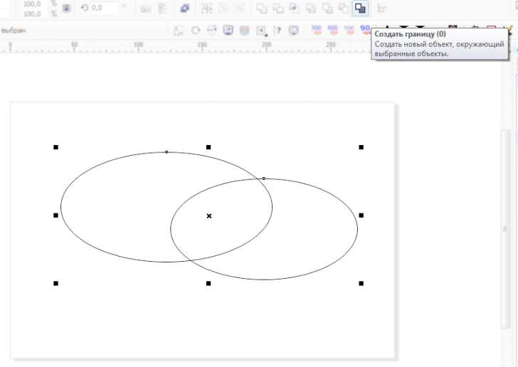

Форма объекта
Здравствуйте.
Есть скрипт который создает подложку под объект по его контейнеру(BoundingBox)
скрипт не мой, взял на форуме, уже точно не помню на каком, возможно на этом
Sub makeRect()
Dim s As Shape, sRect As Shape
Dim x As Double, y#, h#, w#
Set s = ActiveShape
If s Is Nothing Then Exit Sub
s.GetBoundingBox x, y, w, h
' ActiveLayer.CreateRectangle x,y,w,h
Set sRect = ActiveLayer.CreateRectangle2(x, y, w, h)
sRect.Fill.UniformColor.RGBAssign 80, 0, 0
sRect.OrderToBack
End Sub
Контейнер дает нам координаты и габариты. Можно как то определять форму объекта и делать подложку этой формы? Формы-простые фигуры, круг, квадрат, треугольник, все.
Назначить эти формы подложке не проблема. Вопрос в том чтобы изначально определить какой формы фигура чтобы выбрать что назначать.
а просто делать копию объекта не годится?
... кнопочкой "+" при выделенном объекте
можно добавить проверку на тип объекта
...
Select Case s.Type case cdrRectangleShape Set sRect = ActiveLayer.CreateRectangle2(x, y, w, h) case cdrEllipseShape Set sRect = ActiveLayer.CreateEllipse(x, y, w, h) case cdrCurveShape ' треугольники и другие нестандартные кривые 'сделать копию объекта end Selectdastin,
годится если это просто круг или любая фигура (одна сама по себе)
а если круг является только рамкой содержащей другие объекты то не совсем годится в плане экономии ресурсов. Получается копируем все заливаем вот и подложка, это правильно, а то что внутри могут быть еще десяток объектов это утяжеляет файл.
Да и смысл тогда в скирипте какой он есть изначально, зачем делать отдельно подложку если можно скопировать объект, залить и положить в нижний слой?
shark,
В принципе понял, лучше делать три скрипта на три объекта
нет, это все можно сделать в рамках одной процедуры, то есть одним макросом. После s.GetBoundingBox ставите вышеприведенную проверку на тип, а после End Select продолжаете свой код, т.е. sRect.Fill.UniformColor.RGBAssign 80, 0, 0. В случае с треугольником или какой-то одной кривой делаете копию объекта через s.Duplicate.
Спасибо!
буду пробовать
Как насчёт команды Создать границу?

Корел создаст кривую, описывающую все выделенные объекты. Или это не подойдёт?